Stage 1: Repair the WallsThe biggest thing that was slowing down our painting was the big holes in our wall from the electrical work we had done. I just kept on pushing off repairing that wall even though it really wasn't that big of a project. It was simply a matter of1) cutting out drywall patches and securing them to the wall | 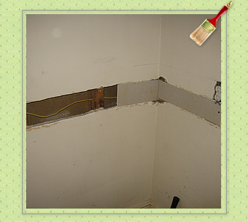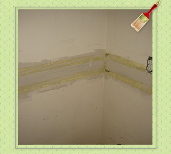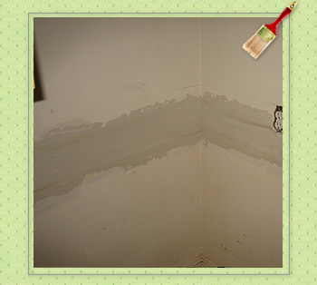 |
Stage 2: Tape the KitchenI am a fairly neat painter, but with all the cabinets and tight spots, we really needed to do a decent amount of taping. Fortunately Amanda is an expert taper after our bedroom project and she literally bent over backwards to get the taping done in the Kitchen. | 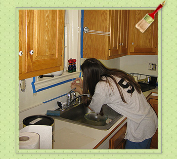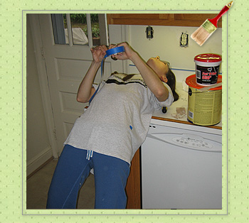 |
Stage 3: PaintAs expected, the actual painting went fast with the first coat getting done on Sunday and the second coat going on Monday. Now there is just a little bit left including some detail work where I coulnd't quite get the paint cut in close enough. | 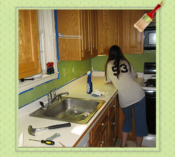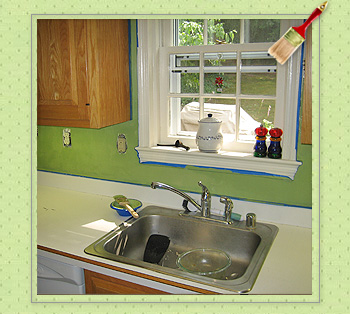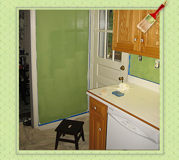 |
Stage 4: Finalize and detail workStill under construction, but we are looking to edge in a few corners, get new faceplates and some new drapes and then we will have a new kitchen! | 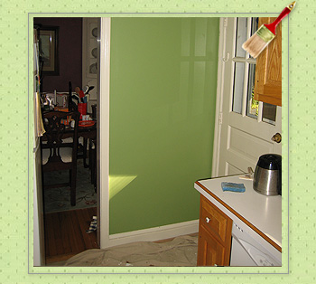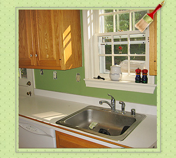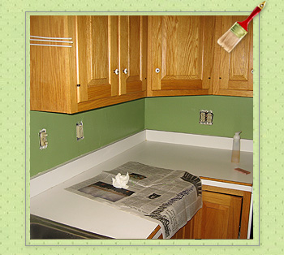 |